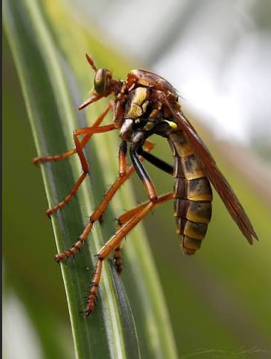

Es una mosca depredadora perteneciente a la familia Asilidae, conocida por sus hábitos cazadores. Presenta un cuerpo alargado, patas adaptadas para sujetar presas y una probóscide especializada. Captura otros insectos durante el vuelo y se alimenta de sus fluidos internos, por lo que cumple una función importante en la regulación natural de poblaciones de insectos.